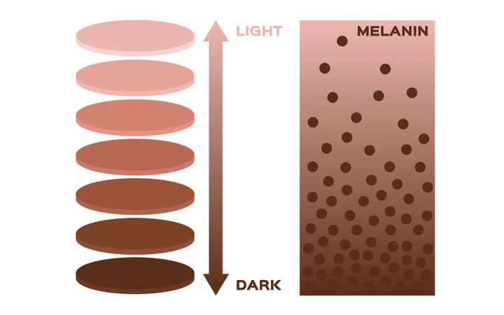
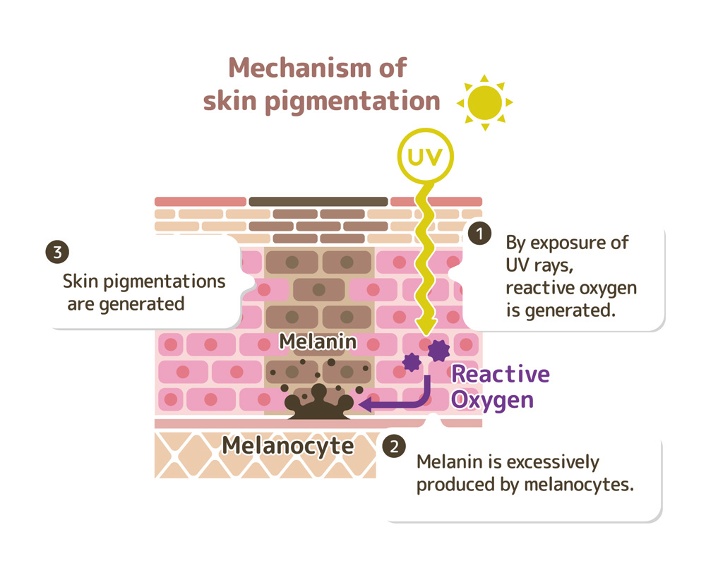

What if the color of your skin held secrets to ancient survival tactics, the ability to protect you from unknown dangers from the sun, and even hints about where your ancestors once called home? Well, spoiler: it does, and it’s called melanin!
Melanin is a natural pigment made of a group of molecules found across a variety of species, from humans to animals to plants. In humans, melanin is primarily known for determining the color of skin, hair, and eyes. However, it also plays essential roles in protecting and regulating various functions within the body. The production of melanin is a complex process that begins in specialized cells called melanocytes, which are predominantly located in the epidermis, the outer layer of the skin.
In melanocytes, melanin is synthesized from the amino acid tyrosine through a series of chemical reactions involving the enzyme tyrosinase. This process results in the formation of three primary types of melanin: eumelanin, pheomelanin, and neuromelanin. Eumelanin, which varies from dark brown to black, is the most prevalent and is responsible for darker pigmentation in skin and hair. Pheomelanin provides lighter red and yellow tones, often seen in individuals with red hair or fair skin. Neuromelanin is found in the brain and is believed to play a role in protecting neurons, particularly in areas associated with movement and cognition.
Melanin also plays a large role in determining what hair color we will have! Black and brown hair means that you have a mixture of black and brown eumelanin. Blonde hair is a result of brown eumelanin replacing black eumelanin, while red hair is because there are equal amounts of pheomelanin and eumelanin.
One of melanin's critical functions is its ability to protect the skin from the harmful effects of ultraviolet radiation, also known as UV. By absorbing and neutralizing UV rays, melanin helps shield DNA from damage that could lead to skin cancers, including melanoma. Individuals with higher levels of melanin, typically found in those with darker skin tones, have a natural advantage against the sun compared to people with less melanin (lighter skin tones). However, this protection from the sun is not absolute, and everyone should take precautions against prolonged sun exposure through actions like the usage of sunscreen!
Although melanin does have its advantages, there are also some problems that come with it, ones that primarily affect people of color who have darker skin tones. Some of them include:
- Hyperpigmentation (an overproduction of melanin that results in dark spots, uneven spots on the skin, and melasma)
- Skin dryness
- Vitiligo (patches of skin that lose pigment)
The evolutionary aspects of melanin production in humans reveal how environmental factors influence pigmentation. In regions near the equator, where UV exposure is high, darker skin evolved as a protective adaptation against sun damage. In contrast, populations living farther from the equator, where UV levels are lower, developed lighter skin tones over generations. This adaptation facilitates the synthesis of vitamin D, an essential nutrient produced in the skin when exposed to sunlight.
The impact of melanin extends to how our bodies age and respond to certain diseases. People with darker skin tones typically show fewer visible signs of aging, such as wrinkles and sunspots. This is due to melanin's ability to absorb and distribute UV radiation in an effective way. Neuromelanin in the brain has been a focus of research for its potential role in neurodegenerative diseases, such as Parkinson’s disease. Studies have shown that individuals with Parkinson's experience significant cell loss in areas where neuromelanin accumulates, although its exact function remains unclear.
Melanin is a versatile pigment that plays crucial roles beyond human pigmentation. In animals, melanin can have multiple purposes, including camouflage and thermoregulation. For instance, the coloration of a chameleon is influenced by melanin, allowing it to blend into its environment, evade predators, and even impress potential mates!
In reptiles, melanin can be important for thermoregulation. Species like the green iguana rely on darker skin to absorb heat more efficiently from sunlight, aiding in temperature regulation. Fungi and bacteria also produce melanin, which provides protection against environmental stressors like UV radiation and oxidative damage. For example, some species of fungi use melanin to shield themselves from UV light, ensuring survival in harsh conditions. Also, some bacteria can produce melanin to protect against antibiotics and heavy metals.
Melanin is, therefore, not just another polymer in the human body. It plays countless diverse roles among practically every species on Earth, advancing past our understanding of it in humans alone. Deepening our understanding of melanin will help us appreciate the complex biology that all species are made up of, and also help us learn how to protect it best so it can continue keeping us healthy!